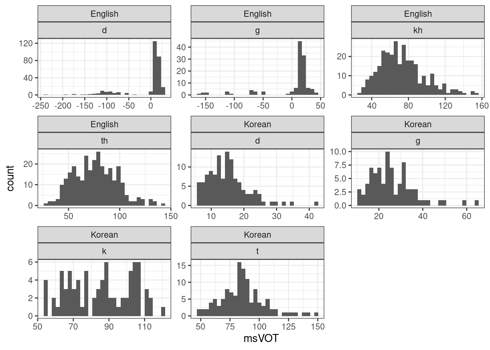
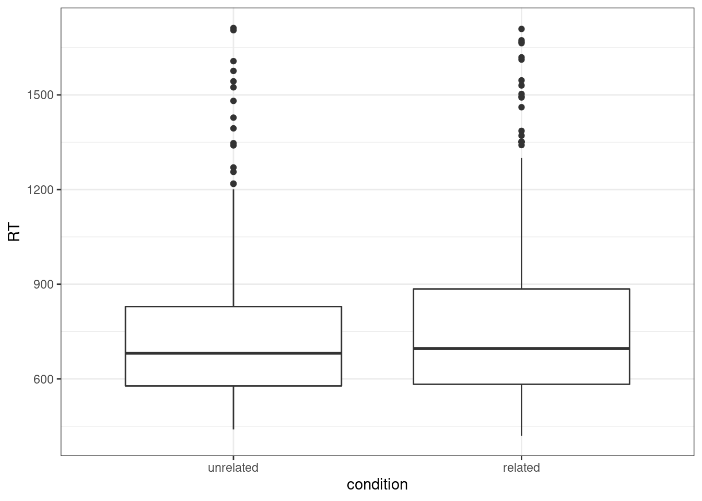

Chapter 10 Case Studies
10.1 VOT Data
- Data on voicing in English and Korean.
10.1.1 Loading the Data
# read English data and keep only relevant columns
vot_engl <- readxl::read_excel("./data/VOT/english.xlsx", sheet = 1) %>%
dplyr::select(subject, gender, Item, WorldBet, TargetConsonant, TargetVowel, msVOT) %>%
subset(TargetConsonant %in% c("d","g","th","kh"))## New names:
## * `` -> ...20
## * `` -> ...21## # A tibble: 6 × 7
## subject gender Item WorldBet TargetConsonant TargetVowel msVOT
## <chr> <chr> <chr> <chr> <chr> <chr> <chr>
## 1 e9gt01mw m dnky4 dAn.ki d A 13.6250605772297
## 2 e9gt01mw m door5 do9 d o 9.86782693455979
## 3 e9gt01mw m tnge5 th^N th ^ 66.9408128957514
## 4 e9gt01mw m cave3n khev kh e 60.3012519920512
## 5 e9gt01mw m gmdp5 g^m.d9Aps g ^ 14.2080928800823
## 6 e9gt01mw m domz3 domz d o 10.724777403027## [1] "d" "th" "kh" "g"# Worldbet documentation in the appendix:
# http://www.cs.toronto.edu/~frank/csc401/readings/worldbet.pdf# read Korean data and keep only relevant columns
vot_kor <- readr::read_tsv("./data/VOT/songyuan.txt") %>%
dplyr::select(subject, gender, Item, WorldBet, TargetConsonant, TargetVowel, msVOT)## Rows: 399 Columns: 17## ── Column specification ────────────────────────────────────────────────────────────────────────────────────────────────────────────────────────────────────
## Delimiter: "\t"
## chr (8): utt, subject, gender, Item, WorldBet, TargetConsonant, TargetVowel,...
## dbl (9): StartTime, EndTime, Burst, VOT, VowelEnd, msVOT, msVowel, logVOT, l...##
## ℹ Use `spec()` to retrieve the full column specification for this data.
## ℹ Specify the column types or set `show_col_types = FALSE` to quiet this message.## # A tibble: 6 × 7
## subject gender Item WorldBet TargetConsonant TargetVowel msVOT
## <chr> <chr> <chr> <chr> <chr> <chr> <dbl>
## 1 s9gt01fw f tnka3 tang2.kuai4 t a 82.3
## 2 s9gt01fw f duzi4 du4.zi d u 9.72
## 3 s9gt01fw f dnzi3 ding1.zi d i 10.7
## 4 s9gt01fw f tuzi5 tu4.zi t u 101.
## 5 s9gt01fw f kuzi5 ku4.zi k u 119.
## 6 s9gt01fw f guto3 gu3.tou g u 32.2## [1] "t" "d" "k" "g"## [1] "character"## Warning in eval(e, x, parent.frame()): NAs introduced by coercion## # A tibble: 4 × 7
## subject gender Item WorldBet TargetConsonant TargetVowel msVOT
## <chr> <chr> <chr> <chr> <chr> <chr> <chr>
## 1 e9gt02mw m cuki4 khU.ki kh U but is not steep a…
## 2 e9gt02mw m tail4 the.&l th e but less steep @ 8…
## 3 e9gt02mw m torn3 tho9n th o visually small in …
## 4 e9gt02mw m dign5 dI.gIxN d I high intensity and…## Warning in vot_engl$msVOT %<>% as.double(): NAs introduced by coercion10.1.2 Explorotary Data Analysis and Descriptive Statistics
- Let’s try to understand our data better.
10.1.2.1 Averages
- Let’s look a the average VOTs.
vot_avg <- vot %>% group_by(language, TargetConsonant) %>% dplyr::summarise(avg_VOT = mean(msVOT, na.rm=T))
vot_avg %>% ggplot(aes(TargetConsonant, avg_VOT)) + geom_bar(stat = "identity")+ facet_wrap(~language)
10.1.2.2 Histograms
- Because we have relatively few target sounds, and relatively many data points per sound, we can take a look at histograms by sound.
## `stat_bin()` using `bins = 30`. Pick better value with `binwidth`.## Warning: Removed 4 rows containing non-finite values (stat_bin).
10.1.2.3 Boxplots
- Let’s look at them side-by-side, using ‘box-(and whiskers)-plots’. Boxplots provide a five-number summary of a distribution:
- The median, the 1st quartile (25th percentile), and the 3rd quartile (75th percentile) make up the box part.
- The upper whisker extends from the third quartile to the largest observed value no larger than \(1.5\cdot IQR\) from it.
- The upper whisker extends from the first quartile to the smallerst observed value no smaller than \(1.5\cdot IQR\) from it.
ggplot(vot, aes(TargetConsonant, msVOT)) + geom_boxplot() + facet_wrap(~language, scales = "free_x")## Warning: Removed 4 rows containing non-finite values (stat_boxplot).
10.1.2.4 Summary
- Voiced stops clearly differ from voiceless stops in VOT. (What a surprise! :))
- A lot of variation in the English dataset.
- Lower average VOTs in English. Picture is a bit more fuzzy for the median.
10.1.3 How long is the difference between voiced and unvoiced stops in English and in Korean?
- Now is the time to fit a linear model to estimate the differences between mean VOTs.
- Let’s first create the right contrasts.
## [1] "d" "th" "kh" "g" "t" "k"df_contrasts <- data.frame(TargetConsonant = c("d", "g", "th", "kh", "t", "k"),
is_voiced = c(1, 1, 0, 0, 0, 0),
is_velar = c(0, 1, 0, 1, 0, 1)
)
# Create centered contrasts from dummy contrasts. That way, we'll be free to use whichever ones we like further down.
df_contrasts$c_is_voiced <- df_contrasts$is_voiced - 0.5
df_contrasts$c_is_velar <- df_contrasts$is_velar - 0.5
# merge the contrasts into the current data frame
# see cheat sheet for left_join: https://rstudio.com/wp-content/uploads/2015/02/data-wrangling-cheatsheet.pdf
vot %<>% dplyr::left_join(df_contrasts)## Joining, by = "TargetConsonant"# code the language too
vot$is_english <- vot$language %>% dplyr::recode("English"=1, "Korean"=0)
vot$c_is_english <- vot$is_english- Let’s start step-by-step and look at a range of models. In your term paper you will only need to present the one which is the most relevant.
library(brms)
vot_english <- vot %>% subset(language == "English")
# An intercept-only model. We use it to check that all packages are properly installed
m1 <- brm(msVOT ~ 1,
family = gaussian(),
data = vot_english %>% subset(!is.na(msVOT)),
file = "./models/vot_m1", cores = 4)
summary(m1)## Family: gaussian
## Links: mu = identity; sigma = identity
## Formula: msVOT ~ 1
## Data: vot_english (Number of observations: 1011)
## Draws: 4 chains, each with iter = 2000; warmup = 1000; thin = 1;
## total post-warmup draws = 4000
##
## Population-Level Effects:
## Estimate Est.Error l-95% CI u-95% CI Rhat Bulk_ESS Tail_ESS
## Intercept 41.19 1.68 37.97 44.49 1.00 3420 2829
##
## Family Specific Parameters:
## Estimate Est.Error l-95% CI u-95% CI Rhat Bulk_ESS Tail_ESS
## sigma 53.46 1.20 51.22 55.90 1.00 3152 2667
##
## Draws were sampled using sampling(NUTS). For each parameter, Bulk_ESS
## and Tail_ESS are effective sample size measures, and Rhat is the potential
## scale reduction factor on split chains (at convergence, Rhat = 1).- Let’s look at model
m1in more detail. Here is what thatbrmcall does:- It says, let’s assume that all our observations are from a normal distribution with mean \(\mu\) and standard deviation \(\sigma\), and that \(\mu\) = a (the intercept).
- Assuming that this model is correct, what can we say about the posterior distribution of the parameters \(a\) and \(\sigma\) given the data?
- Well, it seems that we can say that with 95% probability \(a\) is in the interval \([38; 44.5]\), and \(\sigma\) \([51; 56]\).
# A model with voicing as a predictor. What do the coefs mean?
m2a <- brm(msVOT ~ 1 + is_voiced,
family = gaussian(),
data = vot_english %>% subset(!is.na(msVOT)),
file = "./models/vot_m2a", cores = 4)
summary(m2a)## Family: gaussian
## Links: mu = identity; sigma = identity
## Formula: msVOT ~ 1 + is_voiced
## Data: vot_english %>% subset(!is.na(msVOT)) (Number of observations: 1011)
## Draws: 4 chains, each with iter = 2000; warmup = 1000; thin = 1;
## total post-warmup draws = 4000
##
## Population-Level Effects:
## Estimate Est.Error l-95% CI u-95% CI Rhat Bulk_ESS Tail_ESS
## Intercept 74.55 1.45 71.78 77.36 1.00 3910 2959
## is_voiced -81.02 2.32 -85.63 -76.60 1.00 3904 2838
##
## Family Specific Parameters:
## Estimate Est.Error l-95% CI u-95% CI Rhat Bulk_ESS Tail_ESS
## sigma 35.54 0.78 34.06 37.09 1.00 4024 2788
##
## Draws were sampled using sampling(NUTS). For each parameter, Bulk_ESS
## and Tail_ESS are effective sample size measures, and Rhat is the potential
## scale reduction factor on split chains (at convergence, Rhat = 1).# A model with voicing as a predictor. What do the coefs mean?
m2b <- brm(msVOT ~ 1 + c_is_voiced,
family = gaussian(),
data = vot_english %>% subset(!is.na(msVOT)),
file = "./models/vot_m2b", cores = 4)
summary(m2b)## Family: gaussian
## Links: mu = identity; sigma = identity
## Formula: msVOT ~ 1 + c_is_voiced
## Data: vot_english %>% subset(!is.na(msVOT)) (Number of observations: 1011)
## Draws: 4 chains, each with iter = 2000; warmup = 1000; thin = 1;
## total post-warmup draws = 4000
##
## Population-Level Effects:
## Estimate Est.Error l-95% CI u-95% CI Rhat Bulk_ESS Tail_ESS
## Intercept 34.04 1.17 31.74 36.30 1.00 3766 2618
## c_is_voiced -81.09 2.26 -85.63 -76.48 1.00 3972 2397
##
## Family Specific Parameters:
## Estimate Est.Error l-95% CI u-95% CI Rhat Bulk_ESS Tail_ESS
## sigma 35.52 0.77 34.06 37.05 1.00 3586 3008
##
## Draws were sampled using sampling(NUTS). For each parameter, Bulk_ESS
## and Tail_ESS are effective sample size measures, and Rhat is the potential
## scale reduction factor on split chains (at convergence, Rhat = 1).As you see, the slopes for voicing are the same, but the intercepts change if we change the predictor from dummy coding to a centered predictor.
Let’s look a the language too:
# A model with voicing and language as predictors. What do the coefs mean?
m3 <- brm(msVOT ~ 1 + c_is_english + c_is_voiced + c_is_english:c_is_voiced,
family = gaussian(),
data = vot %>% subset(!is.na(msVOT)),
file = "./models/vot_m3", cores = 4)
summary(m3)## Family: gaussian
## Links: mu = identity; sigma = identity
## Formula: msVOT ~ 1 + c_is_english + c_is_voiced + c_is_english:c_is_voiced
## Data: vot %>% subset(!is.na(msVOT)) (Number of observations: 1410)
## Draws: 4 chains, each with iter = 2000; warmup = 1000; thin = 1;
## total post-warmup draws = 4000
##
## Population-Level Effects:
## Estimate Est.Error l-95% CI u-95% CI Rhat Bulk_ESS
## Intercept 52.49 1.58 49.39 55.55 1.00 3578
## c_is_english -18.48 1.90 -22.14 -14.72 1.00 3261
## c_is_voiced -65.92 3.12 -71.98 -59.93 1.00 2370
## c_is_english:c_is_voiced -15.14 3.73 -22.25 -7.81 1.00 2430
## Tail_ESS
## Intercept 2738
## c_is_english 2420
## c_is_voiced 2645
## c_is_english:c_is_voiced 2052
##
## Family Specific Parameters:
## Estimate Est.Error l-95% CI u-95% CI Rhat Bulk_ESS Tail_ESS
## sigma 31.08 0.60 29.97 32.31 1.00 3547 2234
##
## Draws were sampled using sampling(NUTS). For each parameter, Bulk_ESS
## and Tail_ESS are effective sample size measures, and Rhat is the potential
## scale reduction factor on split chains (at convergence, Rhat = 1).- The average effect of language on VOT (for both, voiced and voiceless consonants), is \([-22; -15]\).
- The average effect of voicing on VOT (across languages), is \([-72; -60]\).
The interaction between language and voicing for VOT (the difference in the effect of voicing between languages), is \([-22; -8]\).
Here is what happens if we remove all those odd VOT values. (They are all smaller than 0.) But can we even interpret the result if we selectively exclude data?
# A model with voicing and language as predictors. What do the coefs mean?
m3b <- brm(msVOT ~ 1 + c_is_english + c_is_voiced + c_is_english:c_is_voiced,
family = gaussian(),
data = vot %>% subset(!is.na(msVOT)) %>% subset(msVOT >= 0),
cores = 4)## Compiling Stan program...## Start sampling## Family: gaussian
## Links: mu = identity; sigma = identity
## Formula: msVOT ~ 1 + c_is_english + c_is_voiced + c_is_english:c_is_voiced
## Data: vot %>% subset(!is.na(msVOT)) %>% subset(msVOT >= (Number of observations: 1333)
## Draws: 4 chains, each with iter = 2000; warmup = 1000; thin = 1;
## total post-warmup draws = 4000
##
## Population-Level Effects:
## Estimate Est.Error l-95% CI u-95% CI Rhat Bulk_ESS
## Intercept 52.50 0.87 50.80 54.18 1.00 3906
## c_is_english -7.82 1.06 -9.94 -5.74 1.00 3543
## c_is_voiced -66.13 1.76 -69.56 -62.61 1.00 2664
## c_is_english:c_is_voiced 6.36 2.15 2.08 10.55 1.00 2707
## Tail_ESS
## Intercept 2758
## c_is_english 2786
## c_is_voiced 2829
## c_is_english:c_is_voiced 2939
##
## Family Specific Parameters:
## Estimate Est.Error l-95% CI u-95% CI Rhat Bulk_ESS Tail_ESS
## sigma 17.64 0.34 16.98 18.32 1.00 4522 2838
##
## Draws were sampled using sampling(NUTS). For each parameter, Bulk_ESS
## and Tail_ESS are effective sample size measures, and Rhat is the potential
## scale reduction factor on split chains (at convergence, Rhat = 1).- Certainly, some values should be excluded. For example, \(-150\,ms\) seems like an absurdly low VOT value. But all of them? How about \(-30\,ms\). This is where domain knowledge is required (which I don’t have).
10.2 Priming Experiment
# Load the 'primingHeid' dataset
library(languageR)
priming_data <- languageR::primingHeid %>% dplyr::select(subject=Subject, word=Word, condition=Condition, RT=RT, response_correct=ResponseToPrime)
priming_data$RT %<>% exp()
priming_data$condition %<>% dplyr::recode("heid"="related", "baseheid"="unrelated")
head(priming_data)## subject word condition RT response_correct
## 1 pp1 basaalheid related 807 correct
## 2 pp1 markantheid unrelated 906 correct
## 3 pp1 ontroerdheid unrelated 671 correct
## 4 pp1 contentheid related 718 correct
## 5 pp1 riantheid related 951 correct
## 6 pp1 tembaarheid unrelated 572 incorrect
## # A tibble: 2 × 2
## condition accuracy
## <fct> <dbl>
## 1 unrelated 0.925
## 2 related 0.805priming_correct <- priming_data %>% subset(response_correct == "correct")
priming_correct %>% ggplot(aes(condition, RT)) + geom_boxplot()
## # A tibble: 2 × 2
## condition mean_RT
## <fct> <dbl>
## 1 unrelated 735.
## 2 related 747.library(brms)
priming_correct$c_is_related <- priming_correct$condition %>% dplyr::recode("unrelated"=-.5, "related"=.5)
priming_m1 <- brm(RT ~ c_is_related, data = priming_correct, file = "./models/priming_m1")
summary(priming_m1)## Family: gaussian
## Links: mu = identity; sigma = identity
## Formula: RT ~ c_is_related
## Data: priming_correct (Number of observations: 719)
## Draws: 4 chains, each with iter = 2000; warmup = 1000; thin = 1;
## total post-warmup draws = 4000
##
## Population-Level Effects:
## Estimate Est.Error l-95% CI u-95% CI Rhat Bulk_ESS Tail_ESS
## Intercept 741.05 8.84 723.39 758.75 1.00 3718 2777
## c_is_related 12.21 17.93 -23.00 47.06 1.00 3594 2690
##
## Family Specific Parameters:
## Estimate Est.Error l-95% CI u-95% CI Rhat Bulk_ESS Tail_ESS
## sigma 237.42 6.26 225.47 250.33 1.00 4641 3162
##
## Draws were sampled using sampling(NUTS). For each parameter, Bulk_ESS
## and Tail_ESS are effective sample size measures, and Rhat is the potential
## scale reduction factor on split chains (at convergence, Rhat = 1).